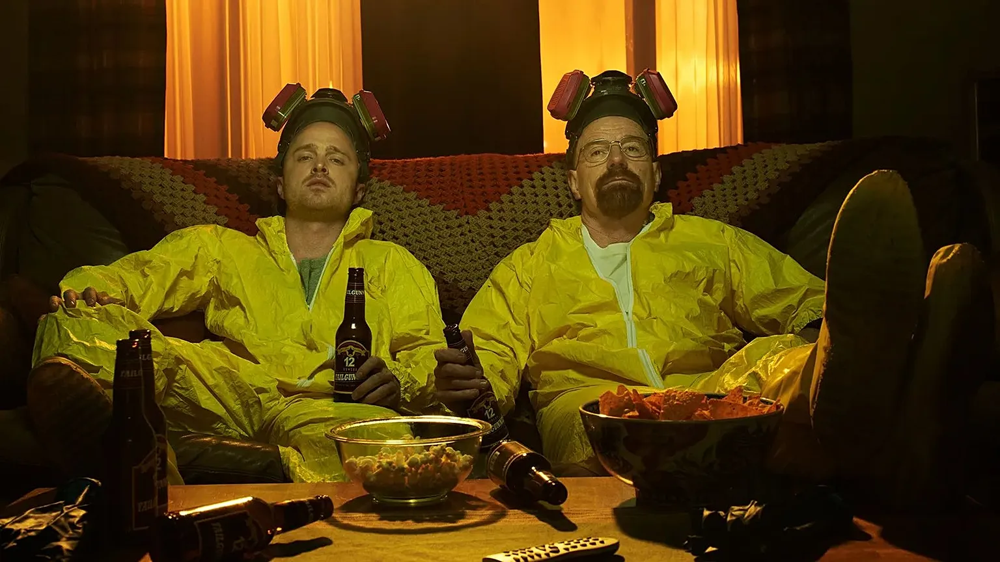

Cada elemento representa una temporada de la serie.
Haz clic en una temporada para ver detalles.

Breaking Bad cuenta la historia de Walter White, un profesor de química que, tras ser diagnosticado con cáncer, decide entrar en el mundo del narcotráfico para asegurar el futuro de su familia. A lo largo de cinco temporadas, la serie explora la transformación de un hombre común en uno de los criminales más temidos del suroeste de Estados Unidos.
Walter White es un profesor de química convertido en fabricante de metanfetamina. Su alias es Heisenberg y busca asegurar el futuro de su familia tras ser diagnosticado con cáncer.
Jesse Pinkman es exestudiante de Walter y su socio en el negocio. Tiene una vida marcada por las drogas, pero también muestra lealtad y humanidad.

Saul Goodman es un abogado excéntrico y creativo. Siempre tiene un plan y ayuda a Walter y Jesse a moverse en el mundo criminal.
La serie sigue siendo considerada una de las mejores de la historia.
Breaking Bad revolucionó la televisión con su guion, actuaciones y estilo visual. Se convirtió en un fenómeno cultural y referencia en todo el mundo. Sus personajes y narrativa marcaron un antes y un después en la TV moderna.
Rumores de que Bryan Cranston y Aaron Paul podrían reunirse en un nuevo proyecto.
Aunque todavía no está confirmado oficialmente, distintas fuentes apuntan a que los actores de Breaking Bad estarían trabajando juntos nuevamente. El misterio genera gran expectativa entre los fans de la serie.